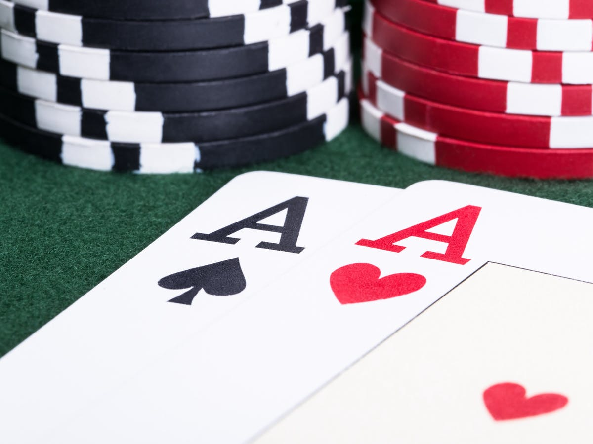

Poker

Jag har ett stort intresse av poker. Jag har spelat i ungefär 1 år och
kommit ganska långt och är ganska bra.
Jag brukar spela med mina vänner på helgerna. jag tittar även mycket
på poker på youtube,
Jag tycker att det är mycket informativt att se andra göra och lära
sig från dem.
En av problemen med poker är att det är en väldigt tid konsumerande
hobby.
Man måste få ihop tillräckligt med folk för att spela och sedan hitta
plats och sen köra under lång tid.
Detta gör att det blir svårt att köra ofta.